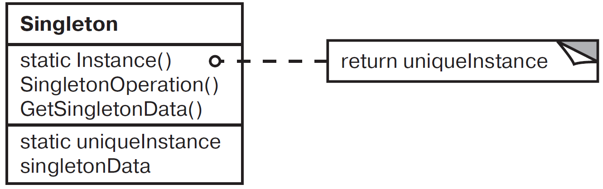

Одиночка (Singleton)
Одиночка — паттерн, порождающий объекты. Гарантирует, что у класса существует только один экземпляр, и предоставляет к нему глобальную точку доступа.
Мотивация
Для некоторых классов важно, чтобы существовал только один экземпляр. В системе может быть много принтеров, но может существовать лишь один спулер. В операционной системе должна быть только одна файловая система и единственный оконный менеджер. В цифровом фильтре может находиться только один аналого-цифровой преобразователь (АЦП). Бухгалтерская система обслуживает только одну компанию.
Как гарантировать, что у класса есть единственный экземпляр и что этот экземпляр легко доступен? Глобальная переменная дает доступ к объекту, но не запрещает создать несколько экземпляров класса. Более удачное решение — возложить на сам класс ответственность за то, что у него существует только один экземпляр. Класс может запретить создание дополнительных экземпляров, перехватывая запросы на создание новых объектов, и он же способен предоставить доступ к своему экземпляру. Это и есть назначение паттерна одиночка.
Применимость
Основные условия для применения паттерна одиночка:
-
должен существовать ровно один экземпляр некоторого класса, к которому может обратиться любой клиент через известную точку доступа;
-
единственный экземпляр должен расширяться путем порождения подклассов, а клиенты должны иметь возможность работать с расширенным экземпляром без модификации своего кода.
Структура

Участники
Singleton — одиночка:
-
определяет операцию
Instance, которая позволяет клиентам получить доступ к единственному экземпляру.Instance— это операция класса, то есть статический метод. -
может нести ответственность за создание собственного уникального экземпляра.
Отношения
- Клиенты получают доступ к экземпляру класса
Singletonтолько через его операциюInstance.
Результаты
Паттерн одиночка обладает рядом достоинств:
-
Контролируемый доступ к единственному экземпляру. Поскольку класс
Singletonинкапсулирует свой единственный экземпляр, он полностью контролирует то, как и когда клиенты получают доступ к нему; -
Сокращение пространства имен. Паттерн одиночка — шаг вперед по сравнению с глобальными переменными. Он позволяет избежать засорения пространства имен глобальными переменными, в которых хранятся уникальные экземпляры;
-
Возможность уточнения операций и представления. От класса
Singletonможно порождать подклассы, а приложение легко настраивается экземпляром расширенного класса. Приложение можно настроить экземпляром нужного класса во время выполнения; -
Возможность использования переменного числа экземпляров. Паттерн позволяет легко изменить решение и разрешить появление более одного экземпляра класса
Singleton. Более того, тот же подход может использоваться для управления числом экземпляров, используемых в приложении. Изменить нужно будет лишь операцию, дающую доступ к экземпляру классаSingleton; -
Большая гибкость, чем у операций класса. Другой способ реализации функциональности одиночки — использование статических методов. Но этот приём препятствует изменению дизайна, если потребуется разрешить наличие нескольких экземпляров класса.